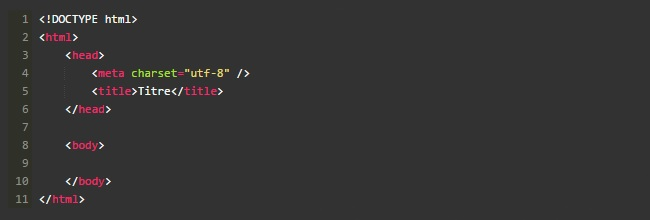
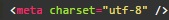

Section 3 - Structure de base d'une page HTML5

Sous-section 1 - Le doctype
‹ !DOCTYPE html›
La toute première ligne s'appelle le doctype. Elle est indispensable car c'est elle qui indique qu'il s'agit bien d'une page web HTML.
Ce n'est pas vraiment une balise comme les autres (elle commence par un point d'exclamation). Vous pouvez considérer que c'est un peu l'exception qui confirme la règle.
Sous-section 2 - La balise ‹ /html›
C'est la balise principale du code. Elle englobe tout le contenu de votre page.
Sous-section 3 - L'en-tête‹ head› et le corps ‹ body›
L'en-tête : cette section donne quelques informations générales sur la page comme son titre, l'encodage (pour la gestion des caractères spéciaux), etc. Cette section
est généralement assez courte. Les informations que contient l'en-tête ne sont pas affichées sur la page, ce sont simplement des informations générales à destination de l'ordinateur.
Le corps : c'est là que se trouve la partie principale de la page. Tout ce que nous écrirons ici sera affiché à l'écran.
Sous-section 4 - L'encodage (charset)

Cette balise indique l'encodage utilisé dans votre fichier.html.
Sans rentrer dans les détails, car cela pourrait vite devenir compliqué, l'encodage indique la façon dont le fichier est enregistré. C'est lui qui détermine comment les caractères spéciaux
vont s'afficher (accents, idéogrammes chinois et japonais, caractères arabes, etc.).
Sous-section 5 -Le titre principal de la page
‹title› C'est le titre de votre page, probablement l'élément le plus important ! Toute page doit avoir un titre qui décrit ce qu'elle contient.
Il est conseillé de garder le titre assez court (moins de 100 caractères en général).
Le titre ne s'affiche pas dans votre page mais en haut de celle-ci (souvent dans l'onglet du navigateur).Il faut savoir que le titre apparaît aussi dans les résultats de recherche,
comme sur Google. Autant vous dire que bien choisir son titre est important !